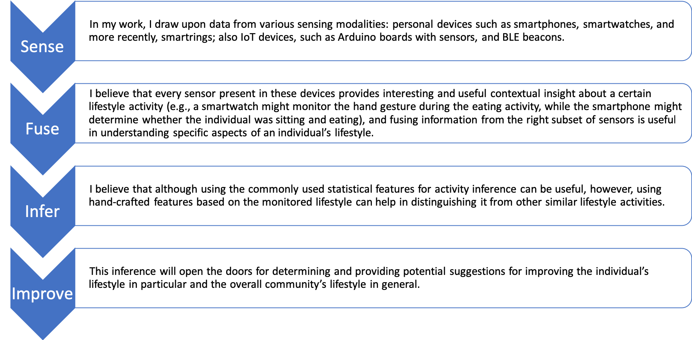
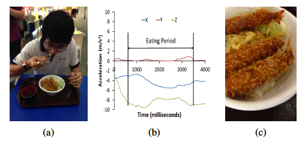

Research Direction
My research enables automatic and unobtrusive monitoring of fine-grained details of an individual's everyday activities and behaviors using sensor data from mobile, wearable, and infrastructure devices. I focus on building systems that perform lifestyle analytics. In my work, I draw upon data from various sensing modalities; apply appropriate data processing and machine learning techniques to automatically and unobtrusively monitor an individual’s daily-life activities. The four high-level steps (or a subset of them) that I follow are:

Selected Active and Past Projects
Annapurna: Monitoring Eating using a smartwatch
|  | Annapurna uses the smartwatch's accelerometer and gyroscope sensor data to continuously to determine when an individual is eating. Once Annapurna detects the eating activity, it opportunistically triggers the smartwatch's embedded camera to capture images of the food being consumed. Annapurna passes these images through an image processing pipeline to identify what an individual is eating. Finally, Annapurna chooses a subset of the relevant images to create an automated food journal. Extensive details about Annapurna can be found in paper-Sen15, paper-Sen17, and paper-Sen18 More info... | .
Auracle based Binge Eating Detection
 |
Binge eating disorder (BED) is a severe, yet treatable eating disorder. Individuals suffering from BED often quickly consume unusually large amounts of food in a single eating session and feel the inability to stop eating. In this project we aim to automatically identify binge-eating episodes and collect user response to behavior-related questions during eating episodes. Recently, we have developed the Auracle device[link, paper-Bi18], a head-worn device that collects data from a microphone that is placed behind the ear, and uses this data to determine whether an individual is eating. In this project, we aim to extract fine-grained details related to the eating activity from the Auracle device. We hypothesize that such fine-grained information can help in distinguishing normal eating episodes from abnormal eating episodes such as binge-eating episodes; thus making the Auracle device useful for automatic binge-eating monitoring.
More info... | .